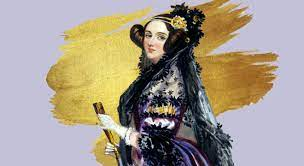

Introdução:
O Dia Internacional das Mulheres é celebrado, anualmente, no dia 8 de março. A ideia de uma comemoração anual surgiu depois que o Partido Socialista da América organizou o Dia das Mulheres, em 20 de fevereiro de 1909, em Nova York. -uma jornada de manifestação pela igualdade de direitos civis e em favor do voto feminino.
Mulheres no mercado de trabalho de programação:
Para participar do Devel{as} a mulher não precisa ter conhecimentos ou experiência no segmento de tecnologia. Isso porque, os únicos requisitos são ser mulher cisgênero ou transgênero, ter mais de 18 anos de idade, ter concluído em Ensino Médio, morar no Brasil e, claro, estar disposta a aprender.
Ada Byron:
Augusta Ada Byron, Condessa de Lovelace, foi uma das responsáveis pelo computador que temos hoje. Nascida no dia 10 de dezembro de 1815, ela é criadora do primeiro algoritmo do mundo. Sua contribuição para a máquina analítica do matemático Charles Babbage mudou o rumo do que foi criado nas décadas seguintes.
Video:
Mensagem do Leandrinüåπ:
A voc√™, mulher: n√£o somente hoje, mas todos os dias, que voc√™ seja reconhecida e amada com o carinho e respeito que merece! ‚ù§Ô∏èüåπ*direitos reservados ao Prof¬∫Leandro Glaudio Rosa.
| Mulheres importantes na história do mundo |
|---|
| Cleópatra: Cleópatra foi uma das rainhas mais poderosas de todos os tempos. Além disso, ela foi a última rainha do Egito Antigo e era conhecida por sua inteligência e astúcia política. |
| Joana D'Arc: Joana D’Arc foi uma camponesa e líder militar francesa durante a Guerra dos Cem Anos. No entanto, ela acabou sendo capturada pelos ingleses e condenada por bruxaria. Por isso, ela morreu queimada em uma fogueira com apenas 19 anos de idade. |
| Rosa Parks: Em 1955, Rosa Parks ficou conhecida mundialmente ao se recusar sair de seu lugar no ônibus e ceder seu assento para um homem branco, durante um período de segregação racial no Alabama, nos Estados Unidos. |
| Jane Austen: Uma das autoras mais queridas da literatura clássica mundial, Jane Austen foi uma escritora inglesa do século XIX que soube retratar a sociedade de sua época de forma inteligente e irônica. |
| Rainha Elizabeth II: Elizabeth Alexandra Mary Windsor foi a monarca britânica com o reinado mais longo da história da Inglaterra, governando o país durante 70 anos. |